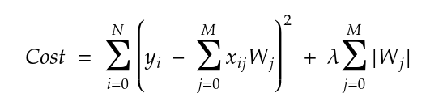
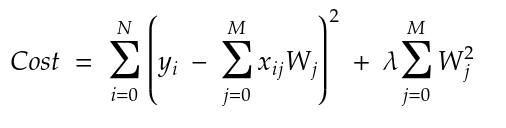

Regularization is used to avoid overfitting and for feature selection. There are two types of regularization, L1 regularization and L2 regularization.
L1 Regularization
L1 regularization is also known as L1 norm or Lasso. Actually, a regression model that uses L1 regularization technique is called Lasso regression.L1 regularization combats overfitting by shrinking the parameters towards 0. It is a form of feature selection since making a feature (parameter) 0 unselects those features and selects the remaining features (parameters).
When we are using L1 regularization, the cost function equation becomes:  In L1 regularization, we penalize the absolute values of weight; this avoids large parameters and thus avoids overfitting.
The derivative of L1 is lambda (a constant). It can be thought of as a force that subtracts some constant (lambda) from the weight every time. Since we use absolute values, L1 has a discontinuity at 0, which causes subtraction results that cross 0 to get zeroed out.
L2 Regularization
L2 regularization is also known as L2 norm or Ridge. Actually, a regression model that uses L2 regularization technique is called Ridge regression.In L2 regularization, less significant features would still influence final prediction, but the influence would be minimal.
When we are using L2 regularization, the cost function equation becomes:  Layers that use L2 regularization return a non-sparse solution since the weights will be non-zero. L2 regularization is not robust to outliers - since the squared term blows up the differences in the errors of the outliers. The regularizer then attempts to fix this by penalizing the weight.
Derivative of L2 is 2 x weight x lambda. It can be thought of as a force that removes the weight percentage (w %) of the weight every time. Even if you remove x % of a number a billion times, the diminished number would never reach zero.
Further Comparisons between L1 and L2 regularization
Robustness
Robustness means having an accurate output, even when one or more values are drastically changed due to unforeseen circumstances.L1 regularization is more robust than L2 regularization because L1 takes the absolute values of weight; hence the cost only increases linearly, whereas L2 takes the squares of weight, so the cost of outliers present in data increases exponentially.